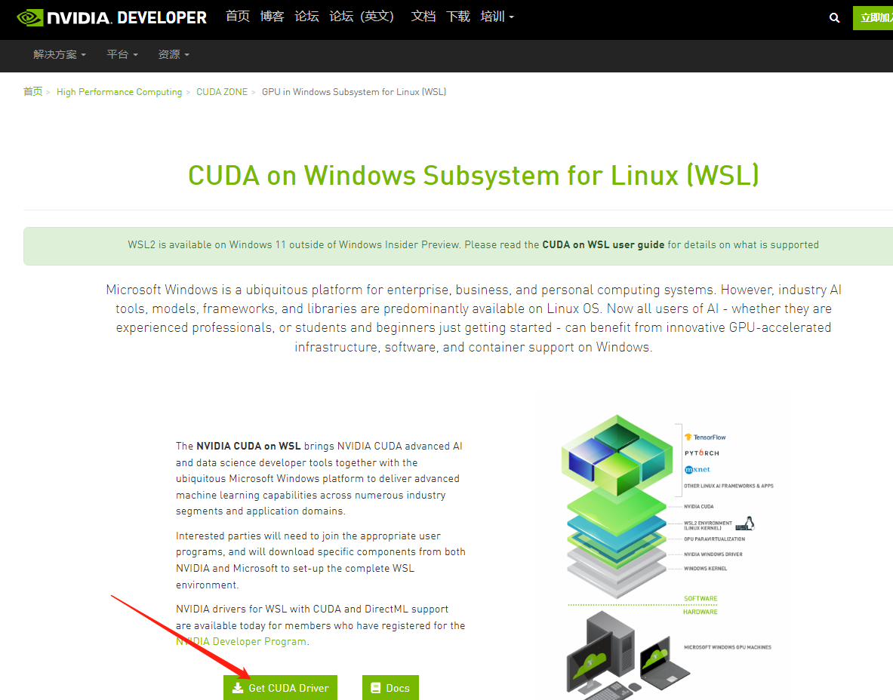

本文作者: WGB
Twitter: [WGB5445](https://twitter.com/WGB5445)
所需工具
- Windows 电脑
- 10 系以上显卡
- 网络
操作过程
- 升级 Windows 系统为预览版
- 安装 WSL2 内核、安装或升级 WSL ubuntu 为 WSL2
- 安装显卡的 WSL 驱动
- 下载 ubuntu 上必要的工具
- 安装 ubuntu 的 cuda 工具
- 下载源码
- 编译
- 执行
- 修改浏览器设置
- 成功开图
一、升级 Windows 系统为预览版或 Windows11
为了在 WSL2 上启用 NVIDIA CUDA，需要将系统升级为 Windows 10 的 Windows 预览体验计划或者 Windows 11
对于 Windows 10，需要先注册 Windows 预览体验计划，并升级预览体验成员版本
需要升级为 windows10 预览版内部版本 19044.1263 或更高版本
可以按照微软官方的步骤进行注册升级
https://insider.windows.com/zh-cn/getting-started#register
二、安装 WSL2 内核以及 Ubuntu
在升级为预览版以后 WSL2 就可以支持调用显卡资源，安装 WSL2 以及 Ubuntu 可以使用命令一键安装，也可以手动逐个安装
1. 完整的安装步骤
可以使用官网步骤进行下载并安装
https://docs.microsoft.com/zh-cn/windows/wsl/install
2. 一键安装
也可以使用命令行进行简便安装
wsl --install
此命令将启用所需的可选组件，下载最新的 Linux 内核，将 WSL 2 设置为默认值，并安装 Linux 发行版（默认安装 Ubuntu）。
三、安装 WSL-Cuda 驱动
由于系统默认不提供显卡-WSL2 的驱动，所以需要自行下载驱动，可以从英伟达官网进行下载
https://developer.nvidia.com/cuda/wsl
1. 选择 Get CUDA Driver
2. 下载
根据显卡型号选择对应驱动

3. 安装
下载后，按默认方法安装即可
四、Ubuntu 上下载必要工具
由于接下来需要编译代码，所以需要安装一系列的工具进行编译 注意:如果已经有编译好的 df-explorer 可以跳过
1. 设置密码
新下载的 Ubuntu 需要等待安装一小会后，设置用户名及其密码
设置用户名及其密码的过程需要注意:
- 输入用户名后回车即可
- 输入密码时屏幕不显示字符
- 输入完成后直接回车即可
- 再次输入密码即可进入 Ubuntu 系统中
2. 安装工具
这一步使用命令行进行安装，安装需要良好的网络环境
国内用户可以选择国内镜像源安装，速度可达 3MB 每秒
输入命令后可能需要输入密码，密码为上一小步设置的密码
sudo apt install -y git libgmp-dev cmake openssl libssl-dev nvidia-cuda-toolkit
五、下载 CUDA 工具包
为了在 Ubuntu 下编译 CUDA 的程序，需要安装 CUDA 工具包
所需的安装包可以在英伟达官网链接中获取(官网中同样是通过命令行的方式获取)
官网链接
这一步需要依次执行下列命令
wget https://developer.download.nvidia.com/compute/cuda/repos/wsl-ubuntu/x86_64/cuda-wsl-ubuntu.pin
sudo mv cuda-wsl-ubuntu.pin /etc/apt/preferences.d/cuda-repository-pin-600
wget https://developer.download.nvidia.com/compute/cuda/11.5.1/local_installers/cuda-repo-wsl-ubuntu-11-5-local_11.5.1-1_amd64.deb
sudo dpkg -i cuda-repo-wsl-ubuntu-11-5-local_11.5.1-1_amd64.deb
sudo apt-key add /var/cuda-repo-wsl-ubuntu-11-5-local/7fa2af80.pub
sudo apt-get update
sudo apt-get -y install cuda
如果所有命令均无出错，可以视为安装成功
六、下载源码
使用 Git 工具下载最新的 df-explorer 源码
1. 下载 core 源码
git clone https://github.com/guild-w/df-explorer.git
2. 进入到第三方插件文件夹
cd df-explorer/thirdparty
3. 下载 CGBN 源码
git clone https://github.com/NVlabs/CGBN.git
4. 下载 workflow 源码
git clone https://github.com/sogou/workflow.git
七、编译
编译源码需要使用到之前下载的工具包，同样是执行命令
1. 编译 workflow
cd workflow && make
2. 回到 df-explorer 目录
cd ../../
3. 创建 build 文件夹并进入
mkdir build && cd build
4. 编译 Release 版 df-explorer
cmake .. -DCMAKE_BUILD_TYPE=Release
make
最后在文件夹中生成 df-explorer 文件，可以使用 ls 命令查看
ls
出现
CMakeCache.txt CMakeFiles Makefile cmake_install.cmake df-explorer samples
里面的 df-explorer 就是最终的可执行文件
八、运行 df-explorer
成功编译了 df-explorer 后，可以使用./def-explorer 的方式运行软件
./df-explorer
如果成功出现以下的提示则为成功(运行成功后界面不可关闭，否则程序将中断)
cuda block size :128
cuda device id: 0
start server on port 8880
九、浏览器开启不安全内容权限
由于 DF 游戏网页采用 HTTPS 协议，但是开图程序使用 http 协议，在默认的浏览器设置中不可以在 HTTPS 的网页中带有 HTTP 协议的请求
所以需要修改浏览器设置，并对 DF 的游戏网页设置不安全内容权限
1. chrome
对于 Chrome 用户可以访问以下链接设置不安全内容权限
chrome://settings/content/insecureContent
在"允许显示不安全内容"的栏中添加 DF 网址后刷新网页即可
2. Edge
对于 Edge 用户可以访问以下链接设置不安全内容权限
edge://settings/content/insecureContent
在"允许"的栏中添加 DF 网址后刷新网页即可
十、remote-explorer 插件添加链接
由于是本机链接，所以添加如下链接即可开图
http://localhost:8880/explore